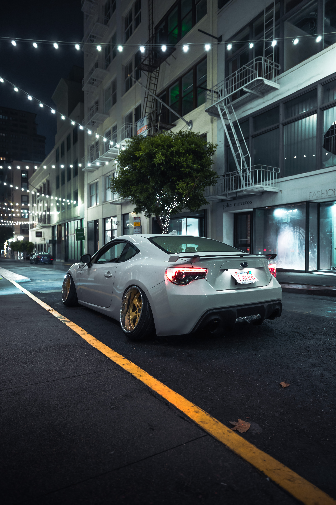
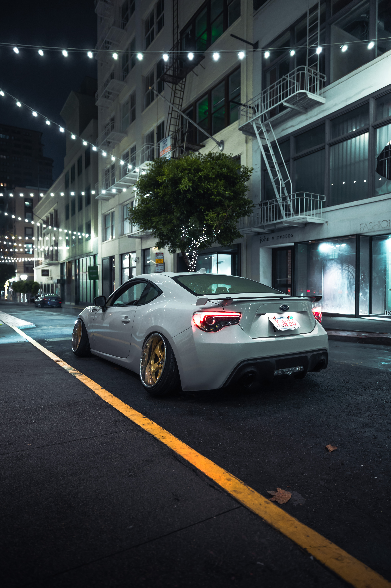

ZC6 Subaru BRZ

 



Photography: Brennan Wright @brennanxwright
Drive System
- Kakimoto GT1.0z Catback
- JDL Dual Resonated Decat Frontpipe
- Uras Tow Strap
- Clear Reverse 4th Light
- Clear OEM Brake Lights
- Toyota JDM OEM Clear Sidemarkers
- Polarg Super White Sidemarker Bulbs
- Mr. Grip Custom Shift Knob
- Napolex Broadway Purple Mirror
- Junction Produce Knot [white]
- Daikei BOSS Hub
- 326 Power Steering Wheel
- Enkei ABC Exclusive 18" [10j : 5x114.3]
- VR Wheels 5" Lip + Barrel
- Subaru STi Group N Rear Hubs [5x114.3]
- T-Demand Front Hubs [5x114.3]
- DBA Slotted Rotors
- Yokohama 225/35r18
- Project KICS Monolith Lug Nuts [neo]
- 326 Power Coilovers [purple]
- 326 Power 60k Springs [gunmetal]
- RacerX Front Lower Control Arm
- RacerX Front Swaybar Endlink
- RacerX Rear Upper Control Arm
- PartsShopMax Rear Lower Control Arm
- 326 Power Rear Toe Arm
Y32 Nissan Cedric
Drive System
- Blitz Air SUS Advance Power Intake
- Clear Brake Lights